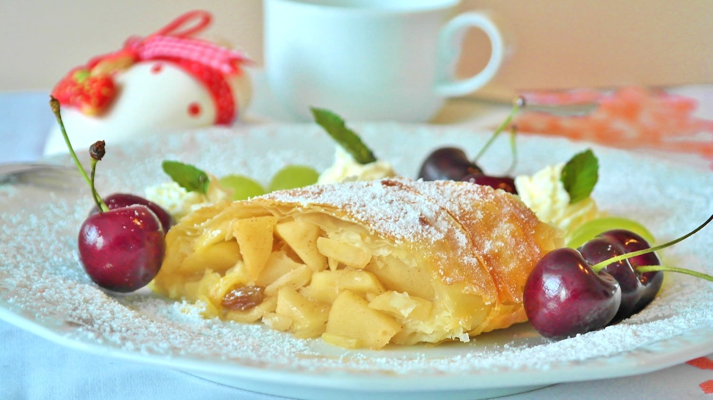

Apfelstrudel

Description
The strudel gained popularity during Habsburg empire. Today, apfelstrudel also known as apple strudel is known as one of Austria’s most traditional pastries. No-one can visit Vienna without indulging in a piece of this delicious dessert in one of the city’s historic cafes.
Ingredients
- Apples
- Vinegar or lemon juice
- breadcrumbs
- salt
- sugar
- oil
- butter
- cinnamon
- raisins
- flour
- water
Steps
- Start by making the pastry dough, which is just five ingredients. Mix the flour and salt in a large bowl. I find it easiest to use my stand mixer to do this, but it could be done by hand. With the mixer on low speed, add the water, oil, and lemon juice or vinegar. It should start to form a shaggy dough.
- Switch to the dough hook attachment and continue to knead the dough for 2-3 minutes until it starts to come together in a ball. If the dough is too dry, add a little additional water onto it so it comes together.
- Remove the dough from the mixer and knead it by hand for a couple of minutes on the counter. Go ahead and slam it down on the counter a couple of times during the process. The purpose is to develop the gluten so you will have a nice, elastic dough later on.
- Place the dough in a light greased bowl, turning to coat the ball of dough, then cover with a piece of plastic wrap and let the dough rest for 60 to 90 minutes. It won’t rise because there is no yeast, but the dough needs this time for the gluten to relax. If you tried to roll or stretch it out at this point without resting it wouldn’t work very well.
- While the dough is resting soak the raisins in hot water for 10 minutes and mix the cinnamon and sugar together in separate bowls.
- When the dough has rested sufficiently, divide it in half (unless you are making one large strudel) and roll one of the balls into a rectangle, just to get things started. There’s no required dimension or thickness, just roll it out a bit (about the size of a large piece of paper will do) so you aren’t stretching a big ball of dough. Then transfer it to a large area covered in a large, clean tablecloth or bed sheet.
- Working your way around all sides of the dough, gently stretch and pull the dough away from the center, until it forms a very large, very thin rectangle. If you get some holes, no worries. Eventually you are going to roll the whole thing up and no one will be the wiser.
- Once your apple strudel dough is sufficiently thin enough for you to see the pattern of your tablecloth through it, gently spread it with butter and sprinkle half of it with the breadcrumbs. These will soak up some of the juice released from the apples as they cook so you don’t end up with a soggy strudel.
- Then arrange half of the apples over the breadcrumbs and butter on half of the dough, leaving a couple inches of border around the edges. Drain the plumped raisins and sprinkle half of them over the top, then sprinkle with half of the cinnamon-sugar mixture.
- Now here is the fun part! Fold the border over the apple filling on both sides to hold the apple filling inside the strudel as it rolls.
- Then grasp the cloth or sheet right by the long edge of the strudel on the filled side and using the cloth, fold/roll the strudel onto itself, just like you would cinnamon roll dough. Strudel dough is too delicate to roll by hand, which is why you let the tablecloth help you do the work of rolling it into a log shape.
- Adjust your grip on the fabric to be closer to the now partially rolled apple strudel and lift to roll the strudel again, continuing until the strudel rolls completely up on itself and making sure that the edges that were folded over don’t come untucked.
- Roll the strudel right onto your baking sheet lined with parchment paper rather than try to pick it up and transfer it by hand. I literally just held my pan at the edge of the table and used the tablecloth to roll the strudel right onto the baking sheet. Be sure to use parchment paper underneath so the strudel doesn’t stick to the pan.
- Brush the tops with melted butter, then bake for about 30 minutes until golden brown on top!
- Let your apple strudel cool for at least 15 minutes before dusting with powdered sugar and slicing into 8 pieces. Serve warm with a scoop of vanilla ice cream, if desired.